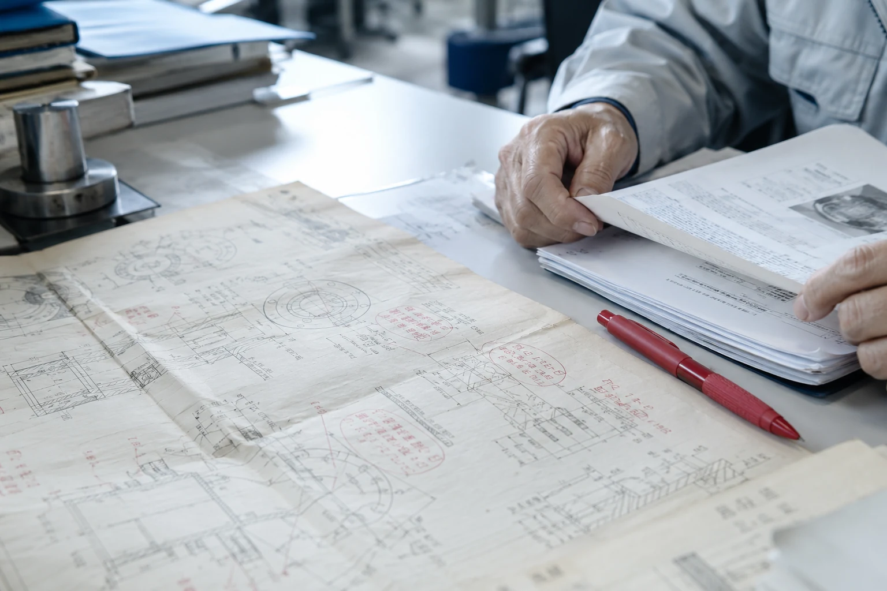
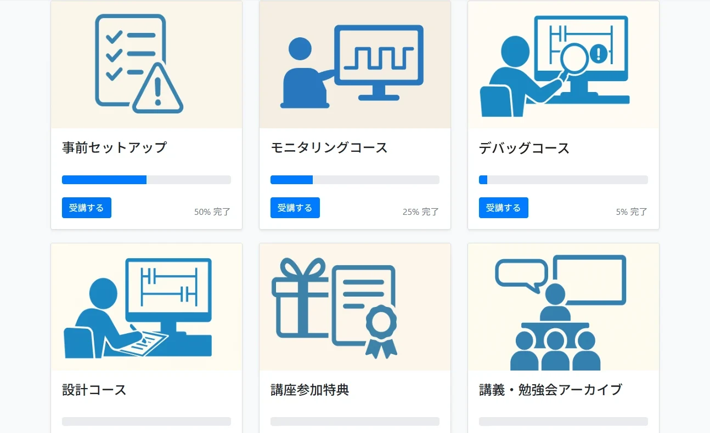
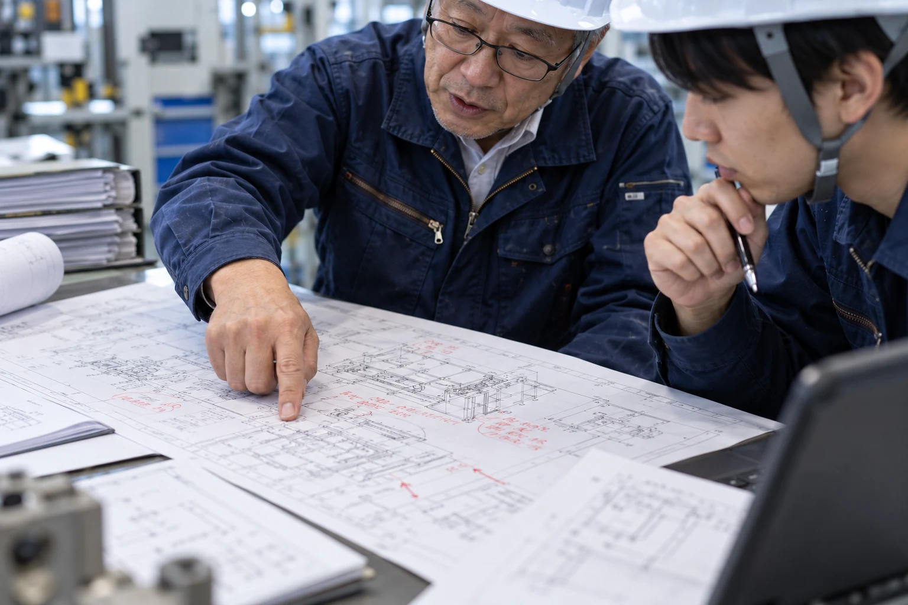

01遡る
過去トラ・改造履歴・図面の赤入れを技術者が読む
例：ラダー（PLCのプログラム）なら、変更の理由まで読みます。ベテランには「なぜ」を聞いて、背景にある失敗まで引き出します。
出てくるもの御社の技術の系譜なぜ今の形になったかの一覧

製造業の設備・保全・技術部門へ
代表は
熟練者の暗黙知を形式知に変え
次世代に定着させる
ロアニクスがやること
御社の技術の過去を技術者が遡って読み
若手が今使える形で渡し
社内で更新し続けられる状態にします
つくるものの例
下はPLC教育でつくった例です。

この掛け合わせで、ベテランの教え方を御社だけの教育コンテンツに置き換えます。誰がどこまで進んだかは画面でひと目で分かり、付きっきりで教える工数も減らせます。

読むだけでは身につかないことも、自分で動かして確かめれば身につきます。本物の設備を止めずに、何度でも試せる場をつくります。
お悩み
技能継承を重視している製造業は
技能継承を
技能継承が
技能の見える化に
取組1位
出典：労働政策研究・研修機構「ものづくり産業における人材確保・定着と技能継承に関する調査」（2026年5月公表 製造業4,342社が回答）
御社の設備で いちばん古い改造の理由を
説明できる人は
まだ社内にいますか
いるうちに遡っておけば 技術は資産として残ります。
いなくなってからでは 報告書と図面から
サービス
シミュレータや教材は手段です。
先に 御社の技術の過去を
01遡る
例：ラダー（PLCのプログラム）なら、変更の理由まで読みます。ベテランには「なぜ」を聞いて、背景にある失敗まで引き出します。

02渡す
若手がどこまで分かっているかを確かめ、人に残す判断と仕組みに任せる作業の線を引きます。

03回す
背景の共有と動機づけまで設計し、今の業務に組み込みます。新しいトラブルや改造が起きても、社内で更新できます。
導入事例
講師の頭の中にある教え方を2年かけて教材・課題・テストに置き換え、付き添う時間を「質問に答える所」だけにしました。
付き添う時間の約96%。
1日8時間・年240日で換算すると
1人で約12年分
自社の教育と業務でも、同じやり方を回しています。
教育・教材
設備・ソフト
社内の業務
※時間は、作業の内訳から出した推計です。人月は1人が1か月でこなす仕事の量で、一般的な開発会社に頼んだ場合の試算です。受講生の数字は、PLC講座の実績です。
選ばれる理由
遡って読める技術者が 定着まで設計する

上長と現場の間に入り、500社以上の相談で身につけた聞き方で、言えずにいる困りごとを引き出します。
教育工学と行動経済学をもとに、背景の共有と動機づけまで組み込みます。

パナソニックの生産設備開発部門で17年。報告書や図面の「省かれたところ」が読めます。
技術顧問として約12社に横断的に入り、読み解いたものを教材と仕組みに落とすところまで担います。
無料・オンライン30分
教えたい技術と、
教材にできる範囲と、
相談内容が固まっていなくても
ヒアリングのあとにお見積りします。教える範囲・進め方・期間によって変わるため、決まった料金表は置いていません。
教えたい技術と、いまの教え方を伺います。教材にできる仕事の洗い出しと、着手する順番の目安をその場でお伝えします。
いいえ。診断だけで終わっても問題ありません。社内で進めるための判断材料としてお使いください。
資料の扱いは着手前に書面で決めます。お預かりする範囲も、そのときに一緒に決めます。